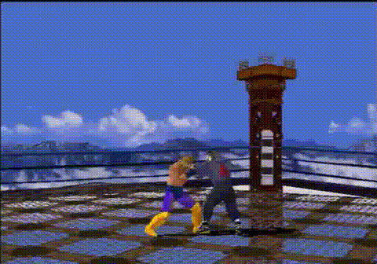
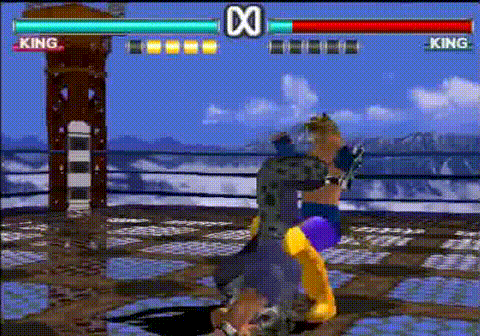
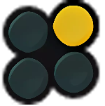
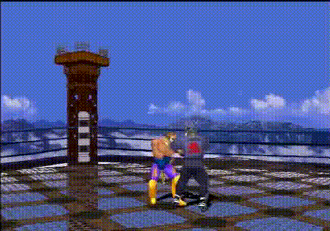
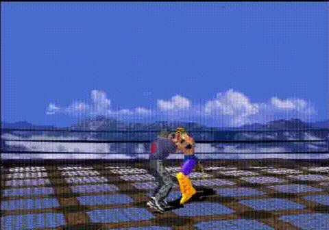
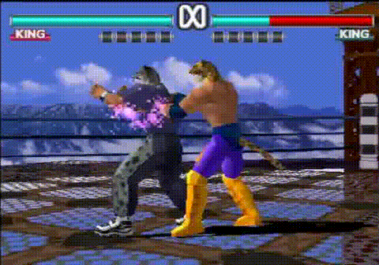

ARM BREAKER

. If King goes for the

STANDING HEEL HOLD
. If King goes for the
KB
King's Bridge
, now you ALWAYS
.
when King goes for the
| STF | KB |
 |
|
| (50%*30) = 15dmg | (50%*60) = 30dmg |
It can be more accurate to do something like Expected Value = (success*damage)-(volatility*execution). But with only (success*damage), we can say that statistically, countering
It's like you sit down at a roulette table but red pays 2x than black. So you bet every time on red, losing your money slower than betting on black. Now, you can bet more often because you lose less on lose, and you gain more on win. Now that you are always winning on betting red, imagine the roulette dealer can make any color they want. This is the situation we are in SHH, but the twist is that the dealer is maybe not capable to notice or rig the roulette.
(REVERSE ARM SLAM + REVERSE SPECIAL STRETCH BOMB)

.beat mashing path (as always).
There are 2untechable here + no visual difference for input.
He can spark blu even when mashing. don't lose patience.

ULTIMATE TACKLE
---

COBRA CLUTCH
after


X->1or2->1or2->X->1or2->1or2.

Conclusion
So we have :
: it beat mash + 45% of throws (11/24 without tackle).
: 45% of throws (11/24 without tackle).
BUT
if you can notice whenIn my opinion, there are some paths that are just worse, not worth learning, nor within the scope of a mind game—unless it's a FT100 :
(ArmBreaker->HeadJammer)
(ArmBreaker->CWFL->DragonSleeperFinish)
(StandingHeelHold->ScorpionDeathLock)
so if we remove them intentionally and subjectively we now have:
: it beat mash + 43% of throws (10/23 without tackle).
: 39% of throws (9/23 without tackle).
Success & Probability
: 0/0 = 0%
: 0/0 = 0%
: 0/0 = 0%